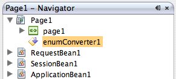

Converts between java.lang.String values in your component properties
and data types of java.lang.Enum or the Java enum primitive
type. This converter is available in JavaServer Faces 1.2 and later, so your project must use Java EE 5.
The conversion usually applies to the property a component uses to display values and to pick up values entered by users. For example, the Text Field component uses the text property for this purpose.
EnumConverter() is used to instantiate the converter. However, you must ensure that the converter uses the following class constructor, which takes your Java enum class as a parameter:
EnumConverter(Class targetClass)
For example, your component binds to values of an enum type Day declared as follows:
public enum Day {Sunday, Monday, Tuesday,
Wednesday, Thursday,
Friday, Saturday};

private EnumConverter enumConverter1 = new EnumConverter();
Day class as a parameter to the new EnumConverter() statement as follows:
private EnumConverter enumConverter1 = new EnumConverter(Day.class);
name: 'entered-value' must be a converter-type.
In this message, name is either the ID of the component or the contents of its label if the component has one, entered-value is the value that the user entered, and converter-type is the type of the converter. For example, if the converter is a Big Decimal converter, the converter-type is signed decimal number.